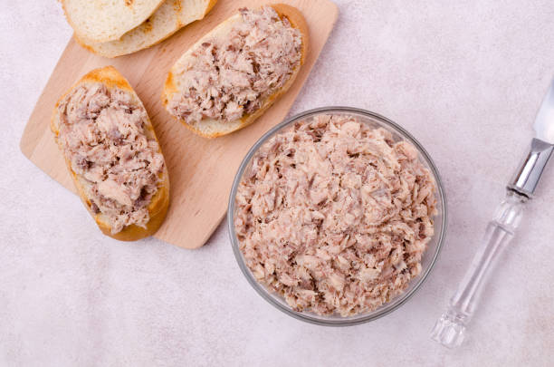

Fresh smoked tuna takes this creamy dip to another level. It is a great choice for fish fries, family gatherings, game day, or relaxing with friends after a day on the water. Serve it chilled with crackers, toasted bread, tortilla chips, or fresh vegetables.
Optional Brine for Fresh Tuna
Brining is optional, but it helps the tuna stay moist during smoking and adds flavor. Let the tuna soak in the refrigerated brine for at least 12 hours.
Brine Ingredients
- 4 cups cold water
- ¼ cup kosher salt
- ¼ cup brown sugar
- 1 tablespoon garlic powder
- 1 teaspoon black pepper
- 1 teaspoon onion powder
- 1 teaspoon paprika
Brining Instructions
- Whisk all the brine ingredients together until the salt and brown sugar dissolve.
- Place the fresh tuna in a nonreactive bowl or food-safe container and cover it completely with the brine.
- Cover and refrigerate for at least 12 hours.
- Remove the tuna, rinse it lightly if desired, and pat it completely dry before smoking.
Dip Ingredients
- 8 ounces fresh tuna, smoked, or canned tuna
- 2 (8-ounce) packages cream cheese, softened
- 1½ cups mayonnaise
- 1 cup sour cream
- 1 tablespoon garlic powder
- 1 tablespoon onion powder
- ½ teaspoon paprika
- ½ teaspoon salt
- 1–2 fresh jalapeños, seeded and finely diced
- 3 green onions, chopped
- ½ cup dill pickles, finely chopped
- 8 ounces shredded Cheddar, Colby Jack, Pepper Jack, or your favorite cheese blend
Instructions
- If using fresh tuna, prepare the optional brine and refrigerate the tuna in it for at least 12 hours.
- Preheat the smoker to 200°F.
- Smoke the tuna until its internal temperature reaches 145–150°F.
- Remove the tuna from the smoker, allow it to cool, and flake it into small pieces.
- In a large bowl, mix the softened cream cheese, mayonnaise, sour cream, garlic powder, onion powder, paprika, and salt until smooth.
- Fold in the smoked tuna, diced jalapeños, green onions, chopped dill pickles, and shredded cheese.
- Cover and refrigerate for at least one hour so the flavors can blend.
- Serve chilled with crackers, toasted bread, tortilla chips, celery sticks, or your favorite dippers.
Jason's Outdoor Tips
- Make the dip the night before for even better flavor.
- Use Pepper Jack cheese and leave a few jalapeño seeds in the dip for extra heat.
- Apple, cherry, or pecan wood gives the tuna a balanced smoke flavor.
- Canned tuna works as a quick substitute when fresh smoked tuna is not available.
- Keep the tuna cold while brining and discard the used brine afterward.
This recipe is all about turning a fresh catch into something everyone can enjoy. From the smoker to the serving bowl, it is an easy outdoor appetizer with plenty of bold flavor.